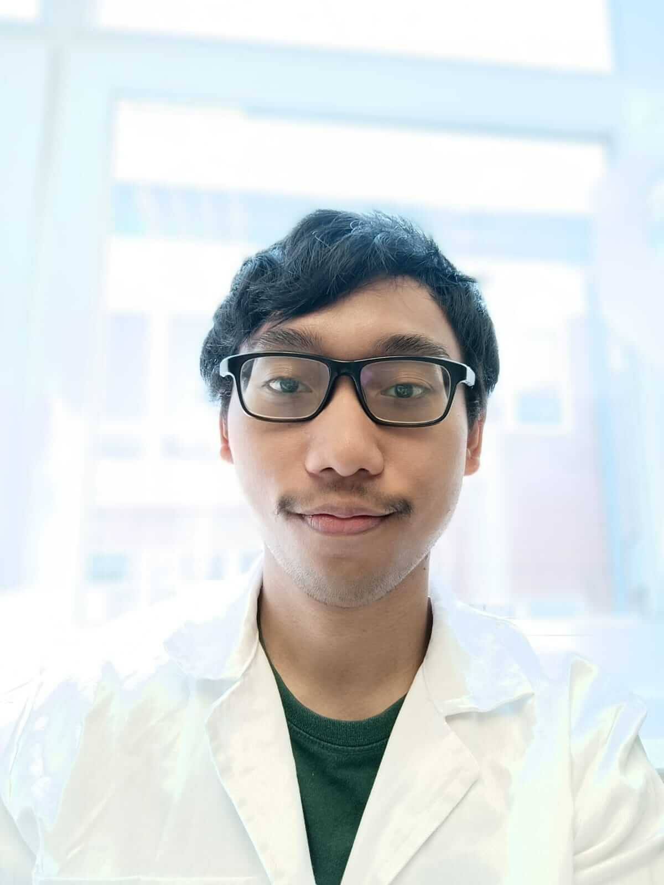

Syahadana Putra Yuzansa
{{ 'students.list.email' | translate }}
yuzansa@gmail.com
{{ 'students.list.degree' | translate }}
Food Safety and Quality Engineering
{{ 'students.list.description' | translate }}
I am currently pursuing a Master's Degree at the University of Debrecen. I have a particular interest in the field of microbiology, food safety, and biotechnology. I have the experience of working in laboratory settings from my time inside and outside Europe. I am very keen to broaden my knowledge and experience by working in a company in Europe.
{{ 'students.list.cv' | translate }}
{{ 'students.list.download' | translate }}
Linkedin:
Link: